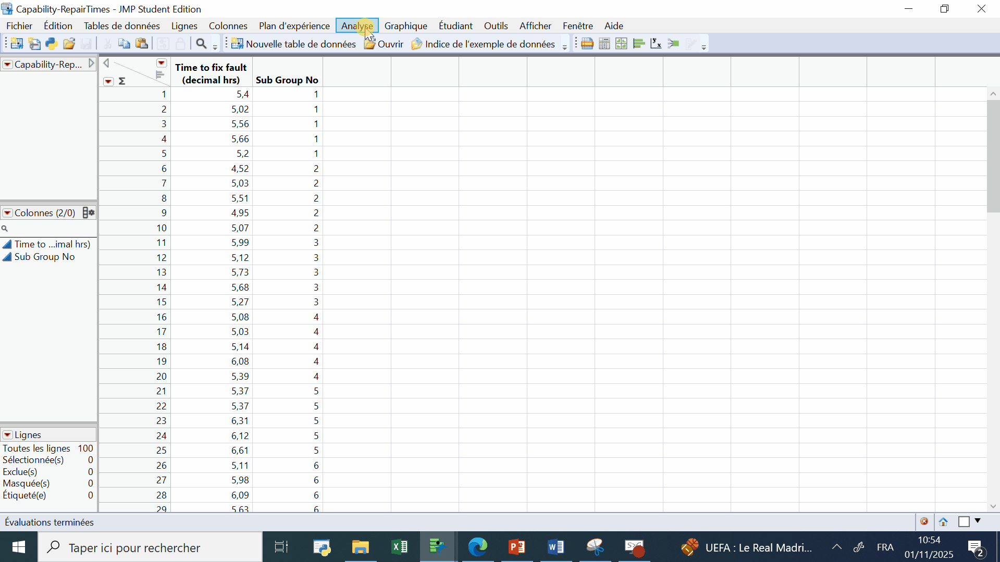

Procédure 06 · Capabilité
Capabilité avec une loi normale
Procédure pas à pas
- Ouvrir Analyse → Distribution.
- Placer la variable mesurée dans Y, Colonnes, puis valider.
- Dans le rapport, ouvrir le triangle rouge de la variable.
- Sélectionner Capabilité du processus.
- Renseigner, si elles existent, les limites de spécification inférieure et supérieure, ainsi que l’objectif.
- Si les données sont regroupées, renseigner l’identifiant de sous-groupe dans les options de capabilité.
- Dans le rapport de capabilité, ouvrir Graphique de capabilité interactif pour explorer les paramètres.
Jeu de données / résultat
Fichier cité : Capability-RepairTimes.xls
Point de vigilance : Ne pas confondre limites de spécification et limites de contrôle.
Démonstrations animées dans JMP
Animations extraites du PowerPoint « Lean Six Sigma avec JMP 003 ». Elles complètent les étapes numérotées ci-dessus.
